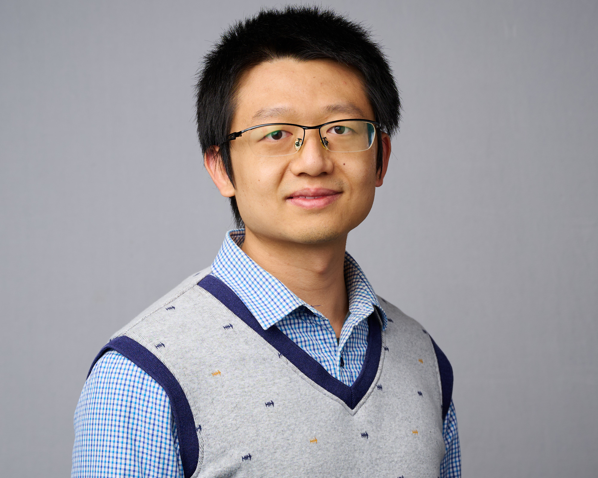

关于我
我目前在休斯敦大学 André C. Barato 教授组内攻读物理博士，研究活性循环系统、非平衡稳态涨落与响应以及涨落定理等课题。此前在南开大学硕士期间，在赵柳教授组内研究相对论动理学与广义相对论。动理学和引力理论同样是我的研究方向。除去工作领域的物理学，我也是叶嘉莹先生学派的弟子，对中国古典文学，尤其是古典诗词有浓厚的兴趣。
教育经历
2022–2027
休斯敦大学 · 物理学博士在读
University of Houston · 预计 2027 年春季毕业
2019–2022
南开大学 · 理论物理硕士
Nankai University
2015–2019
南开大学 · 物理学学士
Nankai University